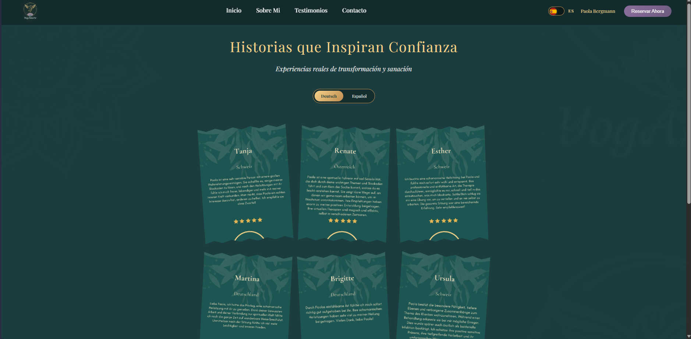

El cliente y el proyecto
YogAmarte es un espacio de bienestar dirigido por Paola Bergmann, enfocado en clases de yoga, terapias chamánicas, angelicales y retiros holísticos. El sitio se construyó para promocionar sus servicios y facilitar que los visitantes agenden clases, se contacten directamente y conozcan su trayectoria como instructora.
Arquitectura
El sitio usa una estructura modular en HTML/CSS/JS puro: el navbar y
el footer se cargan dinámicamente desde componentes compartidos
(load-navbar.js,
load-footer.js), y los estilos comparten variables CSS
centralizadas (variables.css) para mantener consistencia
visual entre páginas sin duplicar código.
Incluye un sistema de traducción global (traduccion.js)
con archivos
es.json y de.json, e integración con
Calendly para que los clientes agenden sesiones directamente desde la
página de reservas.
Lo más particular: el carrusel de testimonios
- Testimonios basados en imágenes, no en texto. Cada testimonio es un recorte de imagen (formato ~340×400px), no una cita escrita, mostrada dentro de un marco con forma orgánica tipo "blob" que combina con la identidad visual del sitio.
- Filtro por idioma con expansión automática. El carrusel filtra los testimonios por idioma (Español/Deutsch) y se expande automáticamente según cuántos testimonios existan en cada uno, sin necesidad de ajustar el layout a mano.
-
Sistema data-driven. Agregar un testimonio nuevo
solo requiere añadir un objeto a
testimonios-data.js— no hay que tocar HTML ni CSS para sumar contenido nuevo, lo que facilita que la clienta pueda pedir actualizaciones simples sin depender de un desarrollador cada vez.
Páginas principales
- Inicio — presentación de servicios y banner principal.
- Sobre mí — biografía y trayectoria de la instructora.
- Contacto — formulario y medios de contacto directo.
- Reserva — enlace a Calendly para agendar clases.
- Testimonios — el carrusel data-driven descrito arriba.
Vista del sitio

